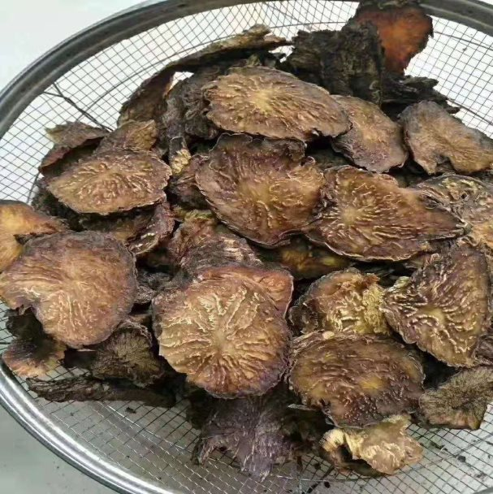

很多男性朋友的痛苦现状
阿妹相信对于男人来说，最无法接受的恐怕就是 “ 不行了 ”！不管你多有钱多有势，要是让女人觉得你 “ 不行了 ”！这一生算是废了大半了！
阳痿早泄、疲软无力、腰酸膝软、四肢发冷、白发脱发、畏寒、燥热、盗汗虚汗、头晕耳鸣、精神萎靡、前列腺问题、尿频尿不尽等症状 ......都是男人的难言之隐，心中之痛！
很多人只知道肾虚早泄了要补肾,却不懂到底如何补肾。一顿乱吃了各种各样的产品，用了错的方法白白遭了好多罪！
再次提醒您：肾出问题了，从根源滋补肾，修复肾，才能真正解决问题，内调方能外养，千万别急于求成走到以下误区：
错误一 :在路边情趣店买激素药吃：
所有路边开的情趣店里买到口服的，里面全有激素，基本上就像电视里曝光的，里面全是“兽药”，把“兽药”给男人吃，长期这样下去，破坏人体细胞，还会对胃、脏器都有一定的损害，这些假药里面含激素太高，慢慢还会得骨质疏松。
错误二 :乱吃各种保健品壮阳：
市场上的保健品基本都是炒作的，基本上是没有什么功效，如果真有功效，国家为什么不给他批一个国药准字的批号，而是只给一个保健食品的批号，大家细想一下就明白了。
一个阿拉善姑娘的自述
我是一个传统的蒙古族姑娘,我的家乡就是盛产野生肉苁蓉的阿拉善。我的父母每天除了放羊就是靠去沙漠里挖肉苁蓉赚钱生活钱,每当看到阿爹阿哥风尘仆仆的从沙漠回来的样子,我都会非常自责。阿爹在一天天的老去 ,而阿哥要结婚买房、娶妻生子，家里的负担却越来越重。所以大学毕业以后,我毅然回到了我的故乡阿拉善,我也决定通过我的努力承担起整个家庭的责任！！！看到阿爹阿哥冒着生命危险挖回来的优质油苁蓉被无良的商贩低价收购，市面上却又充斥着各种天价假苁蓉，我誓死决定将阿爹他们在沙漠里挖到的纯野生肉苁蓉送到全世界所有需要它的人手里，不再让他们花一分冤枉钱。前路很难，而阿妹我却毅然决然！！！微信 : maya66901
被誉为“沙漠人参”的肉苁蓉为何物?对男性究竟有何神奇功效
传说中，天神派神马赐给成吉思汗一样神物。历史上著名的“十三翼之战”，札木合当众残忍地将俘虏分七十大锅煮杀，激怒了天神。天神派出神马，神马一跃到成吉思汗前面后，仰天长鸣，将精血射向梭梭树根，然后用蹄子趵出了像神马生殖器一样的植物根块。
成吉思汗与部将们吃了根块，神力涌现，冲下沙山，一举击溃了札木合部落，为统一蒙古奠定了基础。从此，成吉思汗拉开了一个征服欧亚大陆的时代。这个根块就是肉苁蓉！
男性朋友一定要注意！如果肾出现问题，一定要尽早调理、正确调理！否则不仅会影响自己下半生的幸福，更会引发一系列危害，严重的甚至会影响下一代健康！ 千万别等到去了医院花了钱，费了时间，遭了罪，才后悔莫及！
央视专栏报道了我们阿拉善的肉苁蓉，这让我倍感欣慰
肉苁蓉适用人群
① 早衰男性：广大肾阳不足，遗精滑精，阳痿早泄，精冷不育的男性。
② 养身人士：注重日常养身人士，滋阴保健，轻身延年。
③ 烟酒人士：社交应酬频繁，因长期饮酒吸烟、生活不规律而导致肝肺羸弱人士。
④ 上班族：压力过大、工作过劳、经常熬夜加班的亚健康人士。
⑤ 体虚人士：易感染流感、发烧咳嗽、咽喉疼痛者。
⑥ 便秘一族：经常习惯性便秘，肠胃不适、一进厕所要半个多小时的人士。
⑦ 爱美女性：广大爱美女性，滋养肌肤，美容养颜、月经不调、宫寒。
阿拉善肉苁蓉富含松果菊苷、苯乙醇苷等十多种活性成分、还有钙、钾、钠、镁、锌、铁锗等几十种微量元素，对身体各方面调理效果都非常显著。
长期吃肉苁蓉
你会发现
▼
补肾益精，改善体质
肉苁蓉中含有大量氨基酸、胱氨酸、维生素
和矿物质珍稀营养滋补成份
对男性肾等都有极大的补益效果
也可有效提高精子活力和质量
可有效地预防、治疗男子肾虚
唐力飞，39岁，广东深圳
我叫唐力飞，今年39 岁，作为一名程序员，每天都要加班熬夜，生活不规律，严重的影响着我的身体。很多程序员都因为过劳、早衰，早早离开了我们。但作为家里的顶梁柱，我肯定要有一个好的身体，才能更好地工作，抚养老人和小孩。没有一个好的身体就不能很好的工作，所以不吃点养身保健品又不行，再说，不吃点自己的心里都会过不去。苦恼、纠结中。
有一次去参加互联网大会，在闲聊时聊到了我的烦恼，我将我的烦恼说出来后，一个同行就笑着说，这也让你烦恼了那么久，我给你推荐一款养生品—— 玛雅家的阿拉善肉苁蓉，你看看我现在身体这么棒都是因为吃了肉苁蓉。后来一打听，周围同行都在吃，而且精神明显比我好很多！

肉苁蓉真的有那么好吗？抱着效果好不好，试过之后才知道的心态。我买了1斤的肉苁蓉，还别说，使用一段时间后，我发现我的身 体真的变好了很多，不会全身酸痛，也不容易疲劳了，而且晚上感觉更持久了。相信长期使用后，会变得更好。
其次肉苁蓉还是送礼的最好选择，前一段时间我去未来岳父家，带了一盒阿拉善肉苁蓉礼品套装去给岳父，事后女朋友告诉我岳父大人的失眠不见了，而且不起夜了，把他老人家高兴坏了，连带着对我也满意的不得了！
阿拉善肉苁蓉对腰膝酸软、性欲衰退、精神萎靡、失眠健忘、消化不良、便秘……多达50种问题调理效果明显，同时对女性美容养颜抗衰老效果非常明显！
我们的宗旨：只卖正宗的阿拉善肉苁蓉
天然无污染，古法种植
原产地直发，为您省去中间商差价
微信号：maya66901（长按可复制）
每天还有肉苁蓉小知识奉献给大家！
还有很多惊喜等着您呦
李耀明，33岁，武汉
我叫李耀明，今年33 岁，在武汉光谷的一家会计公司上班。由于每天有大量资料需要审核，工作时间长、压力特别大。现代白领的“过劳肥”越来越明显，还有便秘让我很苦恼。
不仅如此，和老婆结婚4年，依旧没有孩子。每次房事也有点力不从心，心里对老婆很抱歉，老婆反而反过来安慰我，让我更加愧疚！
正在我情绪低落时，我的好友简直是个“救星”，推荐给我阿拉善的“秘方”——阿拉善肉苁蓉。他说他之前和我一样，后来听一个老中医说用肉苁蓉泡水喝，果然很快就重振雄风了。
于是，抱着试一试的心态，我决定每天坚持用肉苁蓉泡水喝。神奇的事情发生了，喝了2个月的肉苁蓉后去做化验 ，我的精力明显变好了，不仅肠道通畅了，而且晚上也不再精疲力竭了，简直太不可思议！
又喝了一个多月，我终于迎来了好消息——老婆终于怀孕， 我激动得恨不得全天下都知道。后来健康管理师告诉我，不仅我可以喝，老婆也可以喝。产后的老婆也没有产后便秘，皮肤变得细腻有光泽，而且很快就瘦到和产前一样！
吃了阿拉善肉苁蓉
3天一种改变，3月焕然一新
第一阶段（1-30天）
强健身体，改善睡眠
男人不再腰酸背痛，精力不济，力不从心
身体变轻松强健，睡得香，消化好
大便小便都舒畅，从早到晚不疲惫
第二阶段（30-60天）
调和五脏，容颜不老
调和五脏，滋养气血，易筋壮骨
男人身体越来越壮，女人气色越来越好
慢性病患者逐渐减药，恢复健康
第三阶段（60-90天）
免疫提高，延缓衰老
身体越来越年轻化，身体舒畅
老化的器官恢复年轻态，不再容易生病
血液变清澈，血管更柔软，老慢病也能健康长寿
我们的宗旨：只卖正宗的阿拉善肉苁蓉
天然无污染，古法种植
原产地直发，为您省去中间商差价
微信号：maya66901（长按可复制）
每天还有肉苁蓉小知识奉献给大家！
还有很多惊喜等着您呦
客户反馈
一、湖南湘潭，48岁，李先生
每天坚持用阿拉善肉苁蓉泡水喝，整个人都觉得变年轻了。以前每天起夜3、4次，现在一觉到天亮，腰酸背痛都不见了！——201 8-12-29
二、上海宝山，27岁，孙女士
之前一直月经不太正常，老公每次也是草草了事，所以结婚2年也没怀孕。在姐妹的推荐下，我和老公一起尝试用阿拉善肉苁蓉泡水喝。没想到过了2个月，我不仅月经正常了，老公每次都生龙活虎了。半年过去了，居然发现自己怀孕了，太开心了！——201 9-02-19
三、浙江杭州，34岁，赵先生
每天抽烟喝酒应酬，肠胃越来越差，咽喉也总是肿痛，浓痰特别多。听朋友建议用阿拉善肉苁蓉泡水喝，经过一个多月，咽喉肿痛的情况减轻了，肠胃也舒畅了，吃饭也有味道了。每天一觉睡到天亮， 我的啤酒肚也没有了！——2019-03-02
阿拉善肉苁蓉对腰膝酸软、性欲衰退、精神萎靡、失眠健忘、消化不良、便秘……多达50种问题调理效果明显，同时对女性美容养颜抗衰老效果非常明显！
我们郑重承诺你：凡订购我家阿拉善肉苁蓉，鉴定不是正宗阿拉善肉苁蓉，7天无条件退货！ 纯野生+原产地直发+贴心售后服务 ，我们讲究的是诚信和善良，扫码咨询，早体验原产地正宗肉苁蓉。
我们的宗旨：只卖正宗的阿拉善肉苁蓉
天然无污染，古法种植
原产地直发，为您省去中间商差价
微信号：maya66901（长按可复制）
或长按下方二维码添加好友，
每天还有肉苁蓉小知识奉献给大家！
还有很多惊喜等着您呦
为了保证品质，可以先付个诚信运费后货到付款
如果尝过不满意无条件退货！